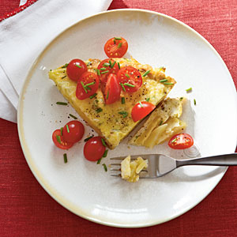
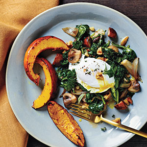
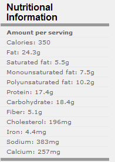
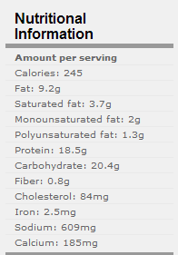

|
|
|
|  | |
|
Ingredients 1 potato ( medium) 1 tablespoon
minced fresh chives 3/4 teaspoon salt 1/2 teaspoon
freshly ground black pepper 4 large eggs 1 large egg white 1 tablespoon olive
oil 1 garlic clove,
minced 3 tablespoons
grated low-fat cheese 1 teaspoon
olive oil 1/2 cup halved grape or cherry tomatoes Preparation 1. Preheat oven to
350°. 2. Place potato in
a saucepan; cover with water. Bring to a boil. Reduce heat, and simmer
20 minutes or until tender; drain. Cool. Peel potato; thinly slice. 3. Combine 2
teaspoons chives, 1/4 teaspoon salt, pepper, eggs, and egg white in a
bowl; stir with a whisk until blended. 4. Heat 1
tablespoon oil in an 8-inch oven proof nonstick skillet over medium
heat. Add garlic and potato slices; cook 30 seconds, gently turning
potato to coat with oil. Sprinkle with remaining 1/2 teaspoon salt.
Press potato mixture with a spatula into a solid layer in bottom of pan.
Pour egg mixture over potato mixture; cook 1 minute. Gently stir egg and
potato mixture. Press potato back down in bottom of pan; cook 2 minutes.
Remove from heat. Sprinkle with cheese.
5. Bake at 350° for 7 minutes or until center is set. Remove from
oven. Drizzle with 1 teaspoon extra-virgin olive oil. Loosen sides
of tortilla from pan; gently slide onto a serving platter. Top with
tomatoes and remaining 1 teaspoon chives
|
 |
| Yield: 4 servings (serving size: 1 wedge and 2 tablespoons tomatoes) | |
|
Poached Eggs with Spinach and Walnuts |
|
|  | |
|
Ingredients 1 tablespoon olive
oil, divided 1 (10-ounce) bag
baby spinach, chopped 3 garlic cloves,
minced 3 vertically
sliced shallots 1 tablespoon
chopped fresh sage 3/4 teaspoon
chopped thyme, divided 1/2 teaspoon black
pepper, divided 1/4 teaspoon salt 1 (8-ounce)
package cremini mushrooms, quartered 3/4 cup toasted walnuts, chopped and divided 2 tablespoons red
vinegar 2 ounces shredded
Gruyere cheese 8 cups water 2 tablespoons
white vinegar 4 large eggs
Preparation 1. Heat a large
Dutch oven over medium-high heat. Add 1 teaspoon oil. Add spinach; sauté
2 minutes. Remove spinach from pan; drain, cool slightly, and squeeze
out excess moisture. Add remaining oil to pan. Add garlic and shallots;
sauté 3 minutes. Add sage, 1/2 teaspoon thyme, 1/4 teaspoon pepper,
salt, and mushrooms; sauté 7 minutes. Stir in spinach, 1/2 cup walnuts,
red vinegar, and cheese; cook 30 seconds. 2. Combine 8
cups water and white vinegar in a large saucepan, and bring to a
simmer. Break each egg gently into pan. Cook 3 minutes. Remove eggs
using a slotted spoon. Spoon 2/3 cup mushroom mixture onto each of 4
plates. Top each serving with 1 egg. Sprinkle evenly with remaining
thyme, pepper, and walnuts |
 |
| Yield: Serves 4 | |
|
Sausage and Cheese Breakfast Casserole |
|
|
Ingredients 1 teaspoon canola
oil 12 ounces turkey
breakfast sausage 2 cups 1% low-fat
milk 2 cups egg
substitute 1 teaspoon dry
mustard 1/2 teaspoon
freshly ground black pepper 1/4 teaspoon salt 1/4 teaspoon
ground red pepper 3 large eggs 16 (1-ounce)
slices white bread 1 cup (4 ounces)
finely shredded reduced-fat extrasharp cheddar cheese Cooking spray
Preparation 1. Heat a large
nonstick skillet over medium-high heat. Coat pan with cooking spray. Add
sausage to pan; cook 5 minutes or until browned, stirring and breaking
sausage to crumble. Remove from heat; cool. 2. Combine milk
and next 6 ingredients (through eggs) in a large bowl, stirring with a
whisk. 3. Trim crusts
from bread. Cut bread into 1-inch cubes. Add bread cubes, sausage, and
cheddar cheese to milk mixture, stirring to combine. Pour bread mixture
into a 13 x 9–inch baking or 3-quart casserole dish coated with cooking
spray, spreading egg mixture evenly in baking dish. Cover and
refrigerate 8 hours or overnight. 4. Preheat oven to
350°. 5. Remove
casserole from refrigerator; let stand 30 minutes. Sprinkle
casserole evenly with paprika. Bake at 350° for 45 minutes or until
set and lightly browned. Let stand 10 minutes. |
 |
| Yield: 12 servings (serving size: about 1 cup) | |